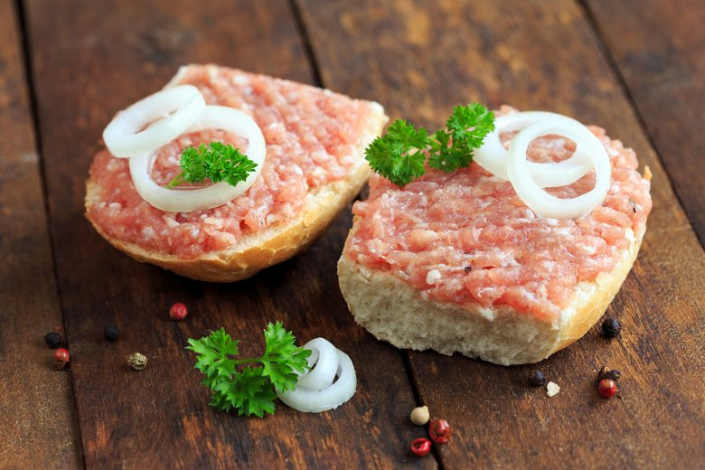

Mettbrötchen

Description
We are makeing a Delicious german Raw meat food called Mettbrötchen
It is very simple to do and its very Delicious.
Ingredients
Steps
- Cut the Onion in small pieces
- Slice the Bread roll
- Use a Knife to put Mett on every half of the Bread roll
- Push the Bread roll with the Mett side into the sliced Onion